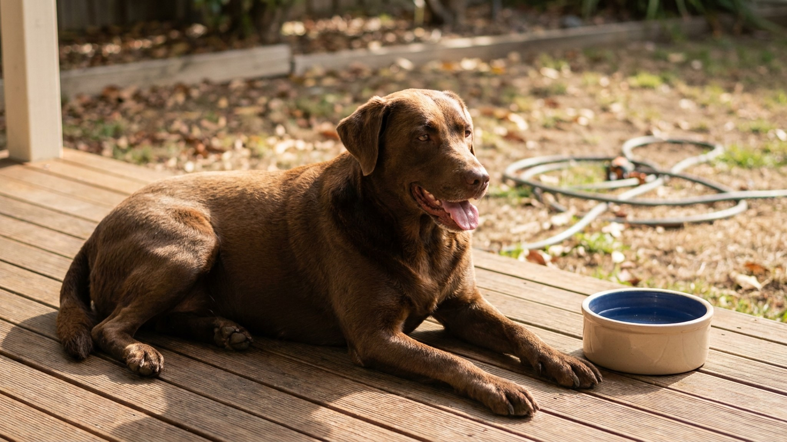

Обезвоживание у собаки летом: 7 признаков и план срочной помощи

4 июня 2026 · 9 минут чтения · Первая помощь · Лето · Собаки
Собака теряет воду быстро: при температуре 30°C и активной прогулке — до 30 мл на кг массы тела в час. Собака 15 кг за двухчасовую прогулку может потерять 900 мл воды. При 5% дефиците массы тела от потери воды начинаются клинические признаки обезвоживания. При 10-12% — критическое состояние, угроза жизни. Летом это происходит быстро и незаметно. Семь признаков, которые нельзя пропустить, и чёткий алгоритм действий.
В AnimaLife есть чеклист летней безопасности и алгоритм первой помощи при перегреве и обезвоживании. Vet-AI проконсультирует в режиме реального времени, если вы в поле или на даче.
Открыть AnimaLife в Telegram → ·
Открыть в MAX →
Как работает терморегуляция у собак и почему они уязвимы
Собаки не потеют через кожу — только через подушечки лап. Основной механизм охлаждения — тепловая одышка (пантинг): учащённое дыхание испаряет воду со слизистых дыхательных путей. Это эффективно, но дорого обходится водным балансом.
При температуре воздуха выше 28°C и влажности выше 60% испарение замедляется — охлаждение через дыхание перестаёт работать полноценно. Именно поэтому влажная жара опаснее сухой.
Группы риска по обезвоживанию летом:
- Брахицефалы (мопс, бульдог, бостон-терьер, французский бульдог) — укороченные дыхательные пути делают тепловую одышку неэффективной.
- Пожилые собаки — хуже регулируют температуру, меньше чувствуют жажду.
- Собаки с избыточным весом — жировая ткань снижает теплоотдачу.
- Рабочие и спортивные породы при активных нагрузках.
- Щенки до 6 месяцев — незрелая терморегуляция.
Признак 1: тест кожной складки — главный домашний тест
Берёте складку кожи на холке или между лопатками, оттягиваете на 2 см и отпускаете. Считаете секунды:
- Менее 1 секунды — норма, кожа мгновенно расправилась.
- 1-2 секунды — лёгкое обезвоживание (5-6%). Немедленно начинайте поить.
- Более 2 секунд или складка «держится» — умеренное/тяжёлое обезвоживание (8-10%+). Это неотложное состояние, нужна клиника.
У пожилых и исхудавших собак кожа менее эластична в норме — тест менее точен. У них ориентируйтесь на другие признаки.
Признак 2: слизистые оболочки — цвет и влажность
Приподнимите губу и осмотрите дёсны. В норме — розовые и влажные (слегка скользкие). При обезвоживании:
- Бледные или белёсые дёсны.
- Сухие, «липкие» или тестообразные слизистые — нет нормального слюноотделения.
- Время наполнения капилляров (CRT) более 2 секунд: нажмите пальцем на десну до побеления, уберите палец — розовый цвет должен вернуться за 1-2 секунды. Если дольше — нарушение микроциркуляции.
Признак 3: вялость и нежелание двигаться
Собака, которая раньше тянула поводок, вдруг останавливается, ложится на землю и не хочет идти дальше. Это не «устала» — это сигнал тревоги. Обезвоживание снижает объём крови, нарушает доставку кислорода к мышцам и мозгу. Вялость, отказ от движения, общая заторможенность — критические признаки.
Признак 4: потеря аппетита и отказ от воды
Парадоксально, но при тяжёлом обезвоживании собака может отказываться от воды. Это происходит из-за тошноты (обезвоживание провоцирует накопление токсинов), нарушения перистальтики, общего угнетённого состояния. Отказ от воды при подозрении на обезвоживание — повод для немедленного звонка в ветклинику.
Признак 5: учащённое или затруднённое дыхание
Норма частоты дыхания у собаки в покое — 15-30 вдохов в минуту. При перегреве и обезвоживании — более 40. При тяжёлом состоянии — хриплое, клокочущее дыхание, синюшный оттенок слизистых (цианоз) — немедленная госпитализация.
Не путайте с нормальной тепловой одышкой после прогулки: пантинг после активности — физиологичен, проходит в течение 10-15 минут в прохладе. Если не проходит — это тревожный знак.
Признак 6: запавшие глаза
При потере жидкости глаза «западают» в орбиты — это хорошо заметно при умеренном и тяжёлом обезвоживании. Нормально поставленные глаза у здоровой собаки слегка выпуклые. Запавшие, тусклые глаза с менее блестящей конъюнктивой — признак потери 7-8%+ объёма жидкости.
Признак 7: редкое тёмное мочеиспускание
Нормальная моча собаки — светло-жёлтая. При обезвоживании почки концентрируют мочу: она становится тёмно-жёлтой, янтарной или даже оранжеватой. Урежение мочеиспускания на прогулке в жару — ранний признак, который многие хозяева не замечают.
Тёмная моча при нормальной активности и питьё в норме — повод проверить функцию почек. Но в жару первое объяснение — обезвоживание.
Пошаговый план помощи при обезвоживании
- Немедленно: уберите собаку из жары в прохладное место (тень, прохладное помещение, кондиционер). Не ставьте под холодный душ — резкое охлаждение вызывает спазм сосудов.
- Предложите воду маленькими порциями: 50-100 мл каждые 5-10 минут. Не давайте пить залпом — быстрое поглощение большого объёма вызывает рвоту и усугубляет потерю жидкости.
- Смочите лапы и паховую область прохладной (не ледяной!) водой. Это помогает снизить температуру тела через крупные сосуды.
- Измерьте температуру ректально (норма 38,0-39,2°C). При 39,5-40°C — лёгкий перегрев. При 40,5°C и выше — тепловой удар, немедленно в клинику.
- Если собака не пьёт или рвёт — не теряйте время. Только внутривенная инфузионная терапия восстановит баланс. Звоните в ветклинику.
- Оральный регидратант (Регидрон 1/3 дозы от детской + вода) можно использовать при лёгком обезвоживании, если собака пьёт охотно. Не солевой раствор домашнего приготовления — неверная концентрация опасна.
- Транспортировка в клинику: при умеренном и тяжёлом обезвоживании (складка >2 сек, вялость, отказ от воды, температура >40°C) — везите немедленно. По дороге — прохладное место, влажная ткань на тело.
Профилактика: как не допустить обезвоживания летом
Норма воды для собаки — 50-60 мл на кг веса в сутки в нормальных условиях. В жару и при активности — в 1,5-2 раза больше. Собака 15 кг летом при нагрузке должна выпивать 1,5-2 литра воды в день.
- Всегда берите воду на прогулку — складная миска и бутылка. На прогулке более 30 минут летом в жару — предлагайте воду каждые 15-20 минут.
- Прогулки в жару — до 9 утра и после 19 вечера. Асфальт в 14:00 может быть 60°C — лапы обжигаются за 60 секунд.
- Никогда не оставляйте в машине — даже 10 минут при 25°C снаружи достаточно для температуры 40°C в салоне.
- Несколько мисок с водой дома, в разных местах — особенно если несколько животных.
- Влажный корм или добавление воды в сухой — увеличивает водопотребление на 30-40%.
- Бассейн или ванночка с водой на даче — собаки охотно заходят охладиться.
Когда обязательно в клинику — без вариантов
- Тест кожной складки более 2 секунд.
- Температура тела выше 40,5°C.
- Собака не пьёт или рвёт после питья.
- Нарушение координации, судороги, потеря сознания.
- Синюшные или белые слизистые.
- CRT более 2 секунд.
- Состояние не улучшается через 15-20 минут в прохладе и после питья.
Тепловой удар + обезвоживание — летальность без лечения достигает 50%. При своевременном лечении (инфузии, охлаждение) — большинство собак полностью восстанавливается. Фактор времени критичен: каждая лишняя минута при высокой температуре тела увеличивает риск необратимого поражения мозга и внутренних органов.
Добавьте в AnimaLife напоминания о воде на прогулке и чеклист летней безопасности. Если возникла ситуация — vet-AI поможет быстро оценить состояние и принять решение: домашняя помощь или клиника.
Открыть AnimaLife в Telegram → ·
Открыть в MAX →
← Все статьи · Открыть AnimaLife в Telegram · RSS